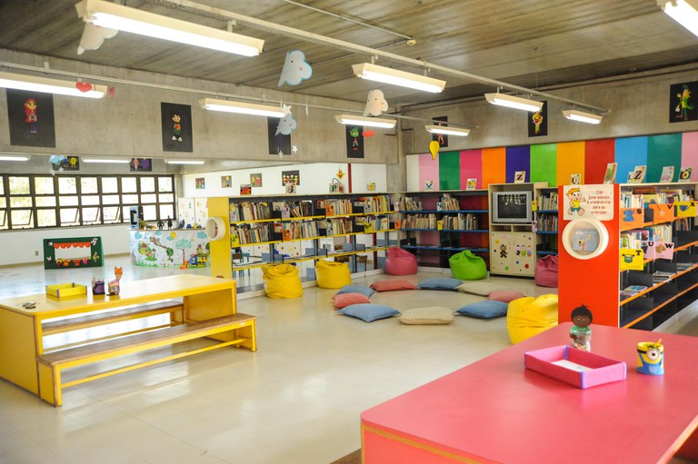

Sobre a biblioteca
A biblioteca se formou com uma pequena coleção de livros que haviamos reunido ao longo dos anos e, com o tempo, a comunidade se envolveu, doando livros e ajudando com a manutenção. A biblioteca se tornou um centro vital para o bairro, oferecendo mais do que apenas livros.Ela organizava clubes de leitura, oficinas para crianças e até sessões de contação de histórias.Com o passar dos anos, a biblioteca ganhou uma importância especial para a comunidade. Era mais do que um lugar para ler, era um espaço onde as pessoas se conectavam, aprendiam e se apoiavam mutuamente. A presença da biblioteca ajudou a fortalecer os laços entre os moradores e a criar um senso de pertencimento na pequena cidade de Vila Nova.

Voltar
Sair